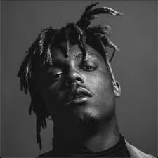

Jarad Anthony Higgins (December 2, 1998 to December 8, 2019), known professionally as Juice Wrld (pronounced "juice world"; stylized as Juice WRLD), was an American rapper, singer, and songwriter. He emerged as a leading figure in the emo and SoundCloud rap genres, which garnered mainstream attention during the mid-to-late 2010s.[3][4] His stage name, which he said represents "taking over the world", was derived from the crime thriller film Juice (1992).[5]